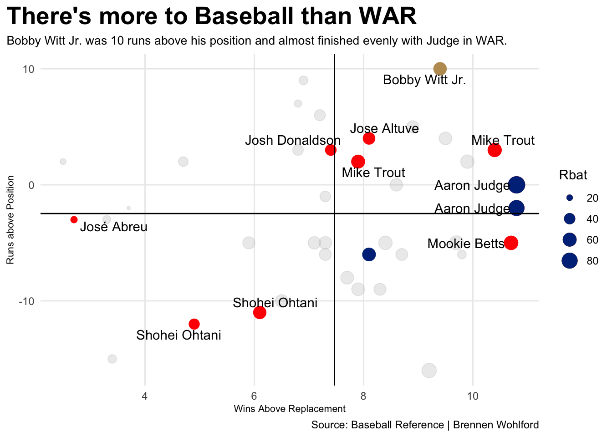
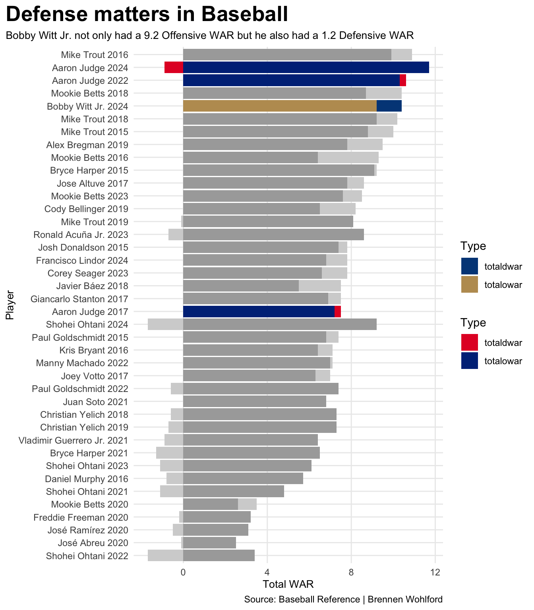
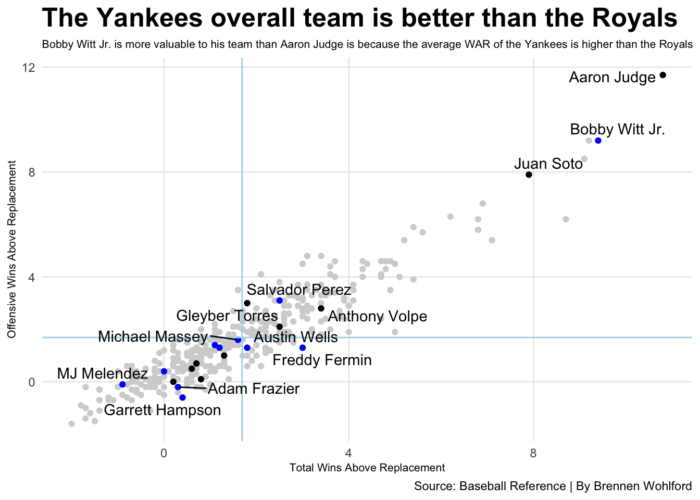

Most Valuable Player awards are some of the most contentious awards in all of sports. Voters base their decisions off a multitude of things, but they all boil down to two main factors. Analytics and the eye test. The award for Most Valuable Player in Major League Baseball is no different. In the modern age of Baseball highlighted by analytics and “money ball” the MVP still seems to be decided more on the eye test and the big names versus who truly deserves the Most Valuable Player in the league.
This was very evident in 2024’s American League MVP race between Bobby Witt Jr. and Aaron Judge, but first a breakdown of the stats.
Runs Above Position (RPOS) is a statistic that represents how many more runs a player is worth at their position compared to a replacement-level player at the same position. Essentially, it accounts for the inherent value or difficulty of playing a particular defensive position.
WAR Runs Batting (RBAT) is a statistic for each position player, this number represents the number of runs above or below average a hitter is.
Wins above Replacement (WAR) is a statistic that estimates how many more wins a player contributes to their team compared to a hypothetical “replacement level” player at the same position. Essentially, it quantifies a player’s overall value in terms of wins, considering both their offensive and defensive contributions.
In this first chart all of these statistics are used to compare Bobby Witt Jr., Aaron Judge, and the last 10 AL MVPs.
Code
library(tidyverse)library(ggrepel)players <-read_csv("mlb_hitter_value_2009_2024.csv")mvps <- players |>filter(grepl("MVP", Awards) ==TRUE) |>mutate(MVP =str_extract(Awards, "MVP-\\d+")) |>separate(MVP, into=c("MVP", "Place"), sep="-") |>mutate(Place =as.numeric(Place)) |>mutate(Player=gsub("\\*", "", Player)) |>mutate(Player=gsub("\\#", "", Player)) |>filter(Place =="1"| Place =="2") |>filter(season =="2015"| season =="2016"| season =="2017"| season =="2018"| season =="2019"|season =="2020"| season =="2021"| season =="2022"| season =="2023"| season =="2024")al <- mvps |>filter(Lg =="AL")nl <- mvps |>filter(Lg =="NL")winners <- al |>filter(Place =="1")bwj <- al |>filter(Player =="Bobby Witt Jr.")judge <- al|>filter(Player =="Aaron Judge")ggplot() +geom_point(data=mvps,aes(x=WAR, y=Rpos, size=Rbat),color="grey",alpha=.3) +geom_point(data=winners,aes(x=WAR, y=Rpos, size=Rbat),color="red") +geom_point(data=bwj,aes(x=WAR, y=Rpos, size=Rbat),color="#BD9B60") +geom_point(data=judge,aes(x=WAR, y=Rpos, size=Rbat),color="#003087") +geom_vline(xintercept =7.4675) +geom_hline(yintercept =-2.475) +geom_text_repel(data=winners,aes(x=WAR, y=Rpos, label=Player)) +geom_text_repel(data=bwj,aes(x=WAR, y=Rpos, label=Player) ) +labs(x="Wins Above Replacement",y="Runs above Position",title="There's more to Baseball than WAR",subtitle="Bobby Witt Jr. was 10 runs above his position and almost finished evenly with Judge in WAR.",caption="Source: Baseball Reference | Brennen Wohlford" ) +theme_minimal() +theme(plot.title =element_text(size =20, face ="bold"),axis.title =element_text(size =8),plot.subtitle =element_text(size=10),panel.grid.minor =element_blank(),plot.title.position ="plot" )

Positional data does well to show how valuable a player is compared to their colleagues. This next chart will dive deeper into Offensive WAR versus Defensive WAR. Offense is fun but only having offense does not make a complete player let alone a Most Valuable Player in the league. Aaron Judge has been one of the best players in the league for a long time in terms of offensive output while boasting average defensive standing. Last year that took a major step backwards with a -0.9 Defensive War while Bobby Witt Jr., a player with excellent defensive production, had a 1.2 Defensive War. Defense matters.
Code
library(tidyverse)library(ggrepel)library(ggnewscale)players <-read_csv("mlb_hitter_value_2009_2024.csv") mvps <- players |>filter(grepl("MVP", Awards) ==TRUE) |>mutate(MVP =str_extract(Awards, "MVP-\\d+")) |>separate(MVP, into=c("MVP", "Place"), sep="-") |>mutate(Place =as.numeric(Place)) |>mutate(Player=gsub("\\*", "", Player)) |>mutate(Player=gsub("\\#", "", Player)) |>filter(Place =="1"| Place =="2") |>filter(season =="2015"| season =="2016"| season =="2017"| season =="2018"| season =="2019"|season =="2020"| season =="2021"| season =="2022"| season =="2023"| season =="2024")mvpshort <- mvps |>group_by(season, Player) |>summarise(totalowar =sum(oWAR),totaldwar =sum(dWAR) ) |>mutate(PlayerSeason =paste(Player, season)) mvpslong <- mvpshort |>pivot_longer(cols=starts_with("total"),names_to="Type",values_to="WAR") bwj <- mvpslong |>filter(Player =="Bobby Witt Jr.")judge <- mvpslong |>filter(Player =="Aaron Judge")ggplot() +geom_bar(data=mvpslong, aes(x=reorder(PlayerSeason, WAR), weight=WAR, fill=Type)) +scale_fill_manual(values=c("lightgrey", "darkgrey")) +new_scale_fill() +geom_bar(data=bwj, aes(x=reorder(PlayerSeason, WAR), weight=WAR, fill=Type)) +scale_fill_manual(values=c("#004687", "#BD9B60")) +new_scale_fill() +geom_bar(data=judge, aes(x=reorder(PlayerSeason, WAR), weight=WAR, fill=Type)) +scale_fill_manual(values=c("#E4002C", "#003087")) +coord_flip() +labs(x="Player",y="Total WAR",title="Defense matters in Baseball",subtitle="Bobby Witt Jr. not only had a 9.2 Offensive WAR but he also had a 1.2 Defensive WAR",caption="Source: Baseball Reference | Brennen Wohlford" ) +theme_minimal() +theme(plot.title =element_text(size =20, face ="bold"),axis.title =element_text(size =10),plot.subtitle =element_text(size=10),panel.grid.minor =element_blank(),plot.title.position ="plot" )

The last chart compares the overall WAR from the Royals and Yankees last year. How each team compares in WAR will help to determine who was truly more valuable to their team. From adding together each teams total WAR the Royals had 20.4 Wins above replacement while the Yankees had 30 Wins above Replacement. Who is more valuable to their team, the player who accounted for nearly half of his team’s WAR or the player who accounted for only a third of his team’s WAR.
Code
library(tidyverse)library(ggrepel)players <-read_csv("mlb_hitter_value_2009_2024.csv")mlb <- players |>filter( season =="2024") |>filter(PA >230)goodmlb <- mlb |>mutate(Player=gsub("\\*", "", Player)) |>mutate(Player=gsub("\\#", "", Player))royals <- goodmlb |>filter( Team =="KCR")yankees <- goodmlb |>filter( Team =="NYY")RoyalsYankees <- goodmlb |>filter( Team =="NYY"| Team =="KCR")ggplot() +geom_point(data=goodmlb, aes(x=WAR, y=oWAR), color="lightgrey") +geom_point(data=royals, aes(x=WAR, y=oWAR), color="blue") +geom_point(data=yankees, aes(x=WAR, y=oWAR), color="black") +geom_vline(xintercept =1.68973, color="lightblue") +geom_hline(yintercept =1.68973, color="lightblue") +geom_text_repel(data=RoyalsYankees,aes(x=WAR, y=oWAR, label = Player) ) +labs(x="Total Wins Above Replacement",y="Offensive Wins Above Replacement",title="The Yankees overall team is better than the Royals",subtitle="Bobby Witt Jr. is more valuable to his team than Aaron Judge is because the average WAR of the Yankees is higher than the Royals",caption="Source: Baseball Reference | By Brennen Wohlford" ) +theme_minimal() +theme(plot.title =element_text(size =19, face ="bold"),axis.title =element_text(size =8),plot.subtitle =element_text(size=8),panel.grid.minor =element_blank() )

Most Valuable Player votes will always be controversial to some fans, but this data aids us in visualizing value objectively taking into account statistics to provide a new insight for the next vote.